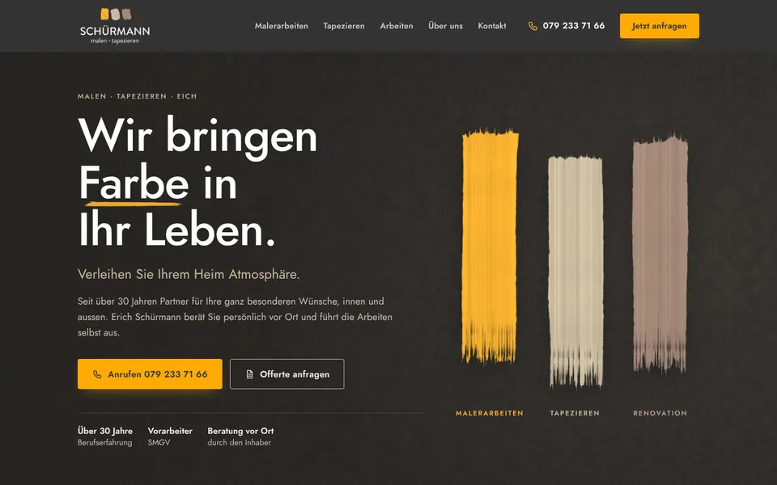
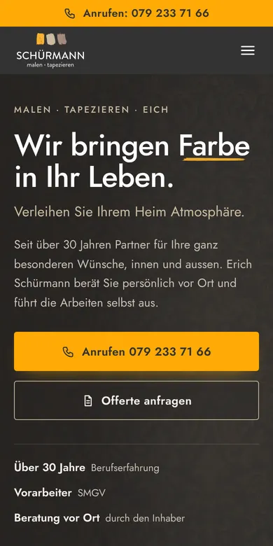

Design A
Drei Farben
Dunkel und edel wie Ihre heutige Kopfzeile, mit feinem Damast im Grund: Oben malen sich die drei Pinselstriche aus Ihrem Logo, daneben steht «Wir bringen Farbe in Ihr Leben.» Die drei Farben ordnen danach die ganze Seite, von Malerarbeiten in Orange über Tapezieren in Beige bis Renovation in Taupe, gefolgt von Ihren sechs eigenen Arbeiten mit Beschriftung.
- Dunkel mit Damast
- Pinselstriche wie im Logo
- Eigene Arbeiten im Raster